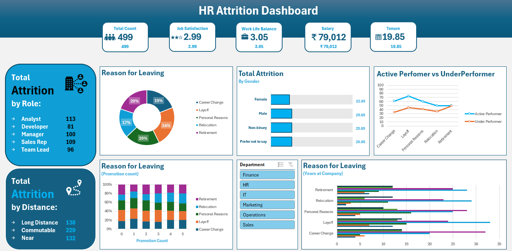

Overview
Designed and developed an Employee Attrition Analysis Dashboard using Excel to explore
patterns behind employee exits. The project focuses on identifying key drivers of attrition,
analyzing workforce distribution, and providing actionable insights for HR decision-making.
Tools & Technologies Used
- Microsoft Excel (Power Query, Pivot Tables, Charts, Formulas)
- Excel Dashboarding Techniques
- Data Cleaning & Preprocessing with Power Query
- KPI-based Reporting & Visualization
Objectives
- Identify key reasons behind employee attrition.
- Analyze workforce distribution across departments, roles, and demographics.
- Highlight KPIs such as average job satisfaction, work-life balance, salary, and tenure.
- Provide slicer-based interactive filtering to support HR in making data-driven decisions.
Key Performance Indicators (KPIs)
- Total Headcount
- Average Job Satisfaction
- Average Work-Life Balance
- Average Salary
- Average Tenure (Years at Company)
Each KPI is interactive and connected to a department slicer for drill-down analysis.
Summary Insights
- Summary of total attrition by role with headcounts.
- Summary of total attrition by distance (Near, Commutable, Long Distance).
Charts & Visualizations
- 📌 Donut Chart – Distribution of Reasons for Leaving (not connected to slicer).
- 📌 Bar Chart – Percentage of attrition by Gender (connected to slicer).
- 📌 100% Stacked Chart – Reasons for Leaving vs Promotion Count (not connected to slicer).
- 📌 Line Chart with Markers – Active vs Underperformer attrition reasons (connected to slicer).
- 📌 Bar Chart – Years at Company vs Reason for Leaving (connected to slicer).
Slicer
Department slicer is implemented to filter all KPIs and selected charts for
department-wise insights.
Impact & Takeaways
- Helped identify hidden patterns behind employee exits across roles and departments.
- Strengthened HR analytics and dashboard design skills in Excel.
- Developed an interactive attrition explorer with slicer-driven insights.